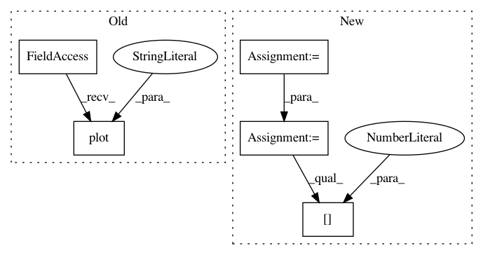

b7990885d8b26b9404fd9ce952b0b2f005019594,california_housing/feature_engineering.py,,,#,23
Before Change
//////////
train_set.plot(kind="scatter", x="longitude", y="latitude", alpha=0.4,
s=train_set["population"]/100, label="population", figsize=(10,7),
c="median_house_value", cmap=plt.get_cmap("jet"), colorbar=True)
plt.legend()
plt.show()
attributes = ["median_house_value", "median_income", "total_rooms", "housing_median_age"]
After Change
// passing data in for imputation and one hot encoding
//////////////////
city_lat_long = pd.read_csv("cal_cities_lat_long.csv")
city_pop_data = pd.read_csv("cal_populations_city.csv")
county_pop_data = pd.read_csv("cal_populations_county.csv")
original, had to change because we only want to deal with cities we have
both location and population data on.
city_coords = {}
for dat in city_lat_long.iterrows():
row = dat[1]
city_coords[row["Name"]] = (float(row["Latitude"]), float(row["Longitude"]))
//how we deiscovered the need for the change
present = []
absent = []
for city in city_coords.keys():
if city in city_pop_data["City"].values:
present.append(city)
else:
absent.append(city)
len(present)
len(absent)
absent
city_coords = {}
for dat in city_lat_long.iterrows():
row = dat[1]
if row["Name"] not in city_pop_data["City"].values:
continue
else:
city_coords[row["Name"]] = (float(row["Latitude"]), float(row["Longitude"]))
//clean pop
//fill in the missing 1980s values with avg rate of change
//make a dictonary of cities lat/long pass in a tuple of lat/longs
//for a given point and do the comparison
//two functions
/Ǘ. take two lat long tuples as input
//return the distance between the two
//vincenty(tuple1, tuple2)
//example below
newport_ri = (41.49008, -71.312796)
cleveland_oh = (41.499498, -81.695391)
x = vincenty(newport_ri, cleveland_oh)
x //distance stored in km, see units on printing
In pattern: SUPERPATTERN
Frequency: 3
Non-data size: 5
Instances
Project Name: CNuge/kaggle-code
Commit Name: b7990885d8b26b9404fd9ce952b0b2f005019594
Time: 2018-01-12
Author: nugentc@uoguelph.ca
File Name: california_housing/feature_engineering.py
Class Name:
Method Name:
Project Name: richzhang/colorization-pytorch
Commit Name: b0ddb103fd66542b0232718b1833ea7551c56f5e
Time: 2018-08-20
Author: rzhang88@gmail.com
File Name: test_sweep.py
Class Name:
Method Name:
Project Name: richzhang/colorization-pytorch
Commit Name: 1215d2390c0ef900337366e7a89e8d21e4bfd592
Time: 2018-08-25
Author: rzhang88@gmail.com
File Name: test_sweep.py
Class Name:
Method Name: